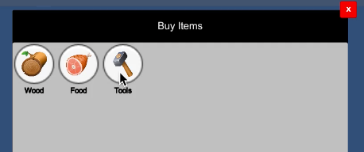
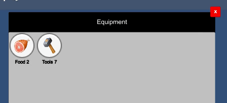

Unity Junior Dev Test
Tasks
1. Display Player stats
Player health and money displayed on the top bar, values should be updating.
2. Shop

Clicking the product in the Shop should take money from Player and add the item into his Equipment.
3. Equipment

When user click a button in the Menu display a Window which lists all items from Player Equipment
BONUS: Display items count next to name of the item.
Rules
- UI has to be responsive.
- You don't have to finish all tasks. Do as many you can.
- Be smart and reuse the code already existing in the project.
- Take a look on GameDebug which might help you.